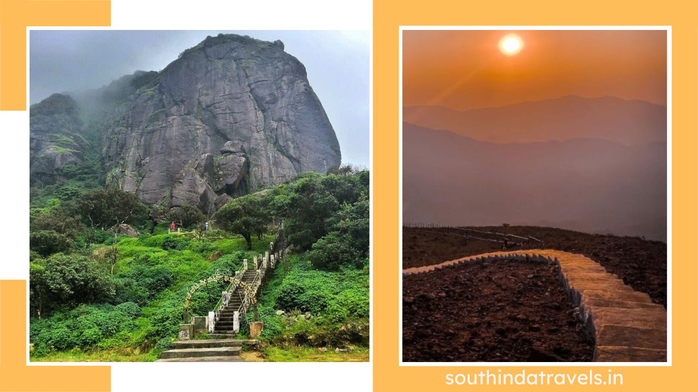
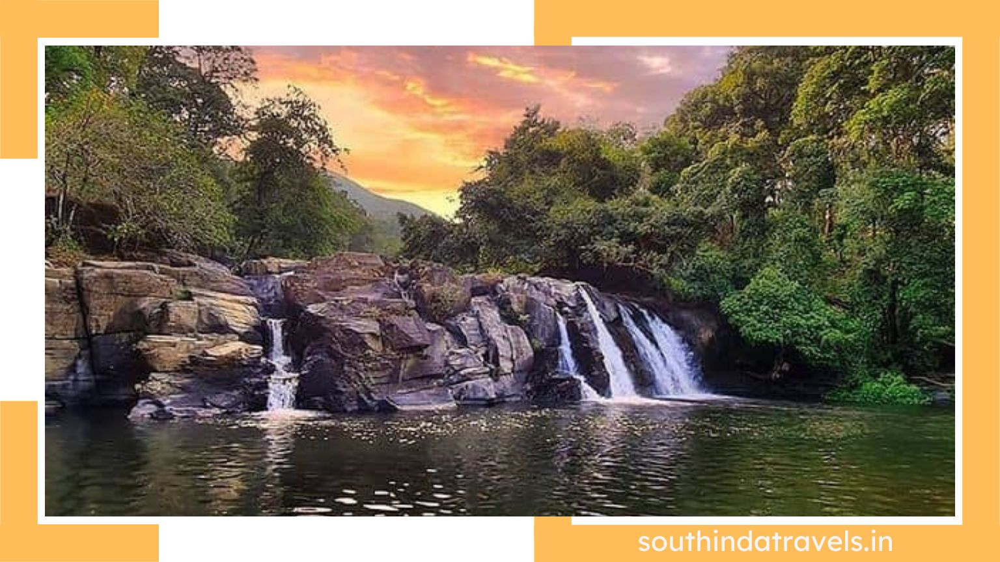
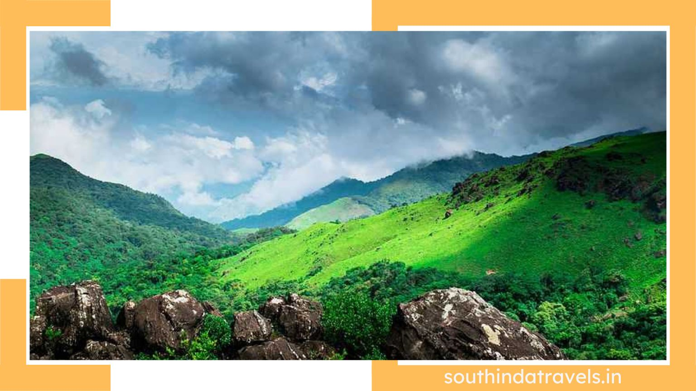

About Coorg
Coorg - Scotland Of India
One of the popular weekend destinations in South India, traditionally known as Kodagu, Coorg is a quaint hill station located in Karnataka. Famed for its coffee production, gushing waterfalls, verdant valleys, rich environment, lush forests, diverse culture, and many more reasons, this green hamlet is a treat in all senses that no traveler can ever forget. Speaking of the geography of Coorg, the location has made this place a natural wonder in the true sense. It is located on the eastern slopes of the Western Ghats, covering an area of 4,102 square kilometres in southwest Karnataka. The region was previously treated as a separate administration until 1956, when it was merged with the Mysore division. Coorg, or Kodagu, is bordered by equally impressive scenic locations. It is enclosed by Hassan District in the north, South Kannada District in the northwest, Kasaragod District (Kerala) in the west, Kannur District (Kerala) in the southwest, Mysore District in the east, and Wayanad District (Kerala) in the south.
Most Popular Places In Coorg
Most of the sightseeing places in Coorg are around the coffee plantations, hills, rivers, and waterfalls. The rich landscapes of these natural assets are unforgettable and beyond comparison. There are numerous must-visit places in this popular hill station in Karnataka that will make you feel happy and content. To help you with the decision to select the best places to visit in Coorg, we have made a list of the places and suggestions on the best things to do in Coorg. Read the whole article below and add these places to your Coorg itinerary.
DUBARE ELEPHANT CAMP
Dubare Elephant Camp is the best travel destination in Coorg for wildlife enthusiasts. This elephant camp is a part of a project undertaken by the Forest Department of the state that offers a unique opportunity to be close to elephants and create some memories with them. It attracts thousands of tourists every year from all over the world. Dubare Elephant Camp is located on the bank of the Kaveri River, encompassed by lush greenery. Previously, the elephants in the camp were used to be trained for the Dussehra performance in Mysore. Now, trained under naturalists, they are used for jungle rides. People can learn about the ecology, biology, and history of the elephants in the camp.
KOTEBETTA PEAK
Kotebetta is the third-highest peak in the Coorg region after Tadiyandamol and Brahmagiri. It is situated at a height of 1,620 metres at the border between Coorg District and South Kannada District. Location-wise, the peak lies between Madikeri town and Somwarpet and can be easily reached without hassle. The name Kotebetta is derived from the word ‘Kote Betta’ which means Fort Hill. The peak looks like a fort on the top of the hill, and that’s why it is named so. It offers an amazing trekking opportunity to tourists. The ten-kilometer-long trail from Hattihole to the peak offers some breathtaking views of the surroundings and makes the trek even more amazing. There is a temple dedicated to Lord Shiva at the peak where the trail ends. It is better to trek to Kotebetta Peak during the months between October and March with a travel guide.


MANDALPATTI VIEW POINT
A trek to Mandalpatti is one of the perfect opportunities to stay amidst the calmness and natural settings of Coorg. The seclusion of the place is surrounded by amazing scenes of flora and fauna, along with the mesmerising views from the top. It will leave you refreshed and rejuvenated after trekking to Mandalpatti. It is located at a distance of around 30 kilometres from Madikeri town and just four kilometres before Abbey Falls. One has to hire a private vehicle to reach Mandalpatti base, as there is no bus facility available on the route. The best time to trek is between November and January, as the road is not developed completely and might become risky during the monsoon.
GADDIGE OR RAJA’S TOMB
Raja’s Tomb, also known as Gaddige or Gadduge in the native language, is one of the important monuments in Madikeri or Coorg. It is located on the northeast side of Coorg, at a distance of 1.5 kilometres from the town. This architectural beauty represents the pervading Indo-Saracenic style of construction. The monument features a tomb at the centre and turrets at the corners, also depicting the Muhammadan style of architecture. There are carvings on the top of the corners as well as on the entrance. Lord Shiva is placed inside the tomb, and it is believed to be worshipped. There are a total of three tombs inside the monument. The left tomb was built in 1834 AD and dedicated to Guru Rudrappa, and the right one is for Lingarajendra, built by his son Chikkaveerarajendra in 1820 AD. The central tomb, which is the largest, is dedicated to King Doddaveerarajendra along with his wife Mahadeviamma.
KARADA VILLAGE
After being popular as a hill station in South India, Coorg has also made its name on the list of honeymoon destinations. One such honeymoon destination in Coorg is Karada Village, which is located at a distance of approximately 30 kilometres from Madikeri town. The place is an ideal location to spend some days surrounded by nature with your life partner. Karada Village is home to some amazing ancestral homes in Coorg. Some of them are believed to be 200–300 years old. If you want to experience a cosy stay in one of these old houses amidst the wild beauty of natural settings, you have to book one in advance. Apart from a comfortable stay, you can also experience the authentic Coorg cuisine here, which will make your honeymoon days more memorable.
NEHRU MANTAP
Nehru Mantap is a secluded spot located on the top of a hill overlooking the Madikeri radio station. It is a top travel destination in Coorg for nature lovers and people who want to travel to lesser-known and uncrowded spots far away from the hustle and bustle of cities. The refreshing, calm, and natural setting around the place will rejuvenate you. Reaching this place is not a difficult task for travellers. You have to climb around 30 steps to reach Nehru Mantap. The amazing view of the Madikeri radio station, along with the enticing views of the distant mountains, are one of a kind.

ABBEY FALLS
Previously known as Jesse or Jessy Falls, located at a distance of eight kilometres from Madikeri town, Abbey Falls is one of the top tourist places in Coorg. Famous for its natural beauty, this picturesque waterfall is nestled between the spice and coffee plantations. The aromas of spices and coffee, along with the coolness of the air at Abbey Falls, make it a one-of-a-kind place to visit. Abbey Falls attracts thousands of nature enthusiasts as well as photographers all around the year. The sight of cascading water falling from a height of around 20 meters, surrounded by some breathtaking views of greenery, is what makes people fall in love with this place. Abbey Waterfalls is a combination of several streams that fall together from a cliff and form a pool of water, which merges into the river Kaveri.
OMKARESHWARA TEMPLE
Omkareshwara Temple was built in 1820 by King Lingarajendra II as an act of self-punishment. The temple is dedicated to Lord Shiva, who is known here as Omkareshwara and represents a combined form of architecture: Gothic and Islamic. Being a popular tourist destination, Omkareshwara Temple attracts a lot of tourists of different faiths all over the year. This historical temple features a dome in the center, and the four corners of the temple are surrounded by turrets. You can get a glimpse of the deity installed near the entrance. In front of the temple, there is a water tank, which is inhabited by a variety of fish.
MALLALLI FALLS
Mallalli Falls is one of the best places to visit in Coorg for couples as well as people who love chasing waterfalls. The location of the waterfall at the foothills of the Pushpagiri Hill Ranges makes it one of the most amazing trekking points in Coorg. It is situated at a distance of 25 kilometres from Somwarpet, which is one of the taluks of Coorg. Mallalli Falls is basically the River Kumaradhara falling from Pushpagiri Peak over a height of around 60 metres. You can find some amazing landscapes around the waterfall and the trekking trails that come through some beautiful settings of nature. The best time to visit this waterfall is during the monsoon. You will find more water in the falls and more refreshing greenery around the place this time.
MADIKERI FORT
Madikeri Fort is a 17th-century-old building that has become a top tourist attraction in Coorg. The fort represents an opulent historical and cultural background as it stands as evidence of several battles. Madikeri Fort now flaunts a museum, which was previously a church made in the Gothic style of architecture and also has a palace inside it. As history says, Madikeri Fort has been rebuilt several times. It was first built in the last quarter of the 17th century. Then Tippu Sultan rebuilt it again and made it into a fort made of stones and bricks. It was renamed Jaffarabad by Tippu Sultan. Then again, it was rebuilt by Lingarajendra Wodeyar II. The British also refurbished it twice. They added a church in place of a temple, which was dedicated to Virabhadra. The church has been converted into a museum now, which is under the protection of the Archaeological Survey of India.
DARGAH SHARIF
One of the most sacred places for people of the Islamic faith in Coorg, Dargah Sharif, is located in Yemmemadu, 35 kilometres away from Madikeri town. The Dargah was built in the fond memory of two Sufi saints, Hazrath Sufi Shaheed and Sayyed Hassan Sakaf Halramir. Legend says that both of the saints came from Persia 366 years ago and sacrificed their lives serving the poor and teaching Islamic discourses. Dargah Sharif of Yemmemadu attracts lakhs of tourists at the time of the ‘Urs’ Festival. It is an eight-day-long festival organised in the memory of the Sufi saints. Moreover, this architectural beauty also remains one of the best places to visit in Coorg.
TADIANDAMOL PEAK
Tadiandamol, the highest peak in Coorg and the second-highest in the state of Karnataka, is one of the favourite destinations in Coorg for trek lovers. It is located in the southeast part of Coorg at a height of 1,746 metres. Trekking through the amazing trails of the hills towards Tadiandamol Peak offers some captivating views of the surroundings. The best time for trekking to this peak is during the winter, between the months of December and May. However, one can also visit one-third of the trail by jeep if they do not want to walk through the full length.


RAJA’S SEAT
Raja’s Seat, literally known as ‘Seat of the Kings,’ is a must-visit place to add to the list of places in your Coorg travel plan. The place is located on Stuart Hill, Madikeri, and used to be a favourite of the Kings of Coorg. Raja’s Seat is definitely a beautiful place to refresh yourself with the mesmerising views of the valleys and soothing environment. The scenic beauty and calmness of the place are beyond comparison and make this place a perfect spot for spending some relaxing time with your loved ones. Raja’s Seat is also one of those places in Coorg from which you can experience stunning views of sunrise and sunset. It is now converted into a park along with a children’s amusement section, which makes it a perfect spot for a family outing.
HARANGI DAM
Sightseeing in Coorg cannot be completed without visiting this marvellous dam in Hudgur village in Kodagu District. The first-ever dam built across the river Kaveri, Harangi Dam, has a length of around 850 metres and a height of 47 metres. Popular as a picnic spot, Harangi Dam offers a spectacular view of water falling down. It is one of the best places to visit with family if you want to spend some relaxing time in a secluded and less-crowded place in Coorg. This picnic spot is located at a distance of 36 kilometres from Madikeri town and can be reached easily. The best time to visit the palace is between August and September. However, if you want to stay here, you can book one of the guest houses in advance.

NALKNAD ARAMANE PALACE
Nalknad Aramane is an age-old palace built by Haleri ruler Dodda Virarajendra in 1792 after he escaped from Tippu Sultan’s troops. There are several different stories associated with the palace, which has been standing as historical evidence of Coorg. As per history, the palace was also used as a shelter for the last emperor of Haleri, Chikkaveera Rajendra. He was hiding here during the period of the British invasion of the Kodagu District. One of the top tourist attractions in Coorg, Nalknad Aramane Palace flaunts an impressive structure on the top of a hill and ancient carvings and paintings across the walls and roofs. You will see a huge gateway upon entering the palace and a kalyana mandapa inside the building. Moreover, there is a durbar, or meeting place, and ‘two dark rooms’ in the basement, which were used as hiding places for the kings.